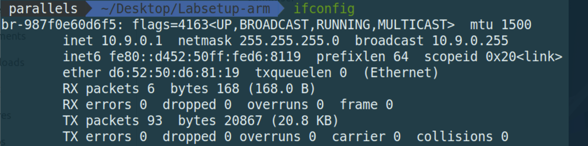
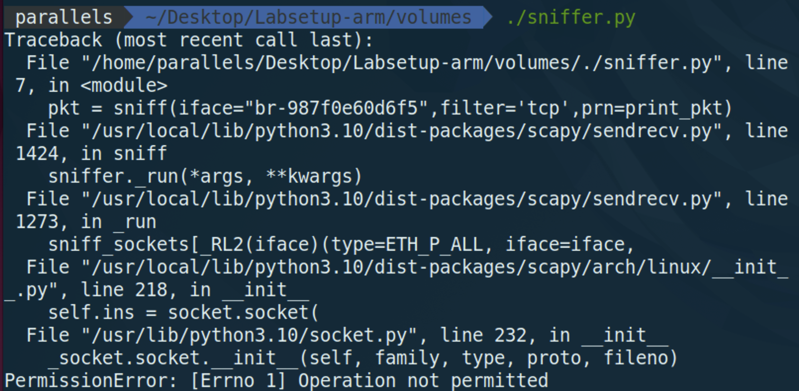
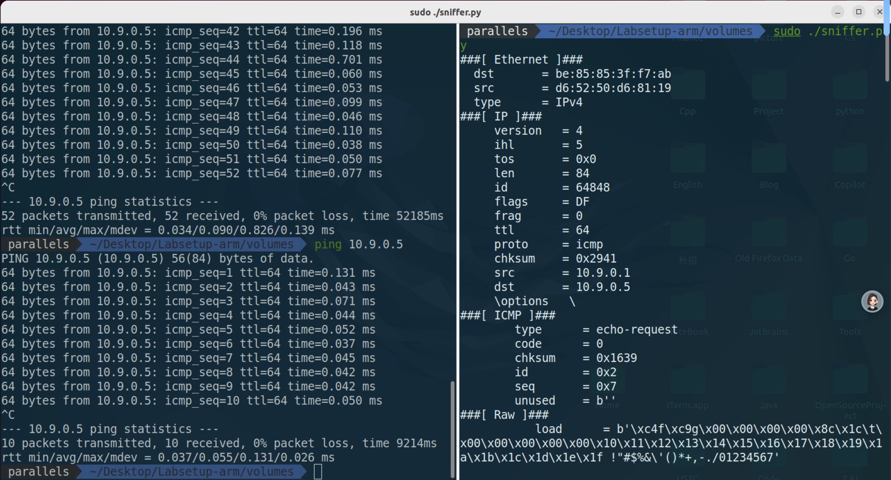
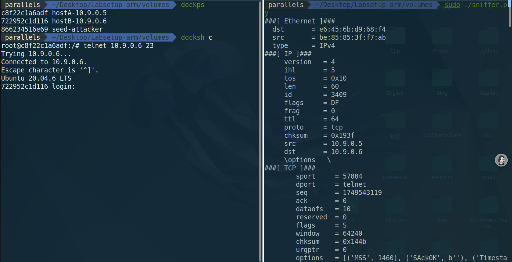
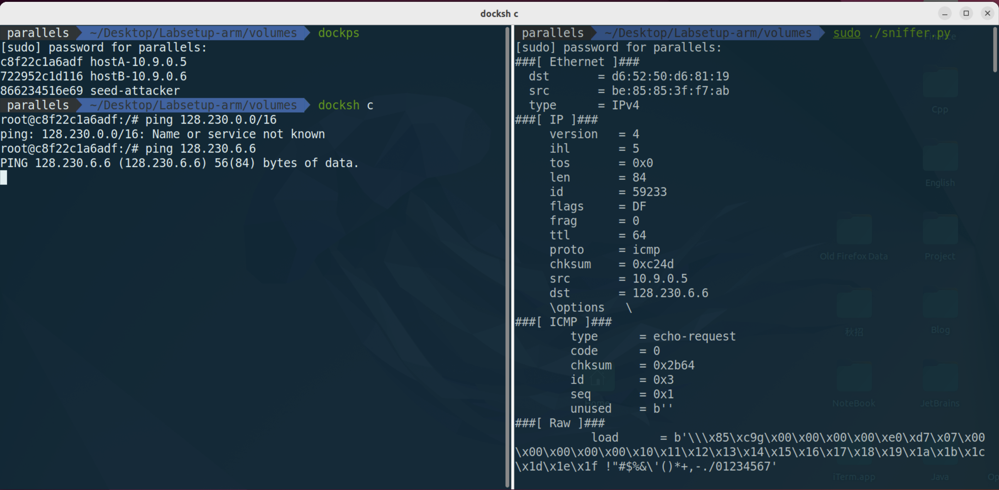
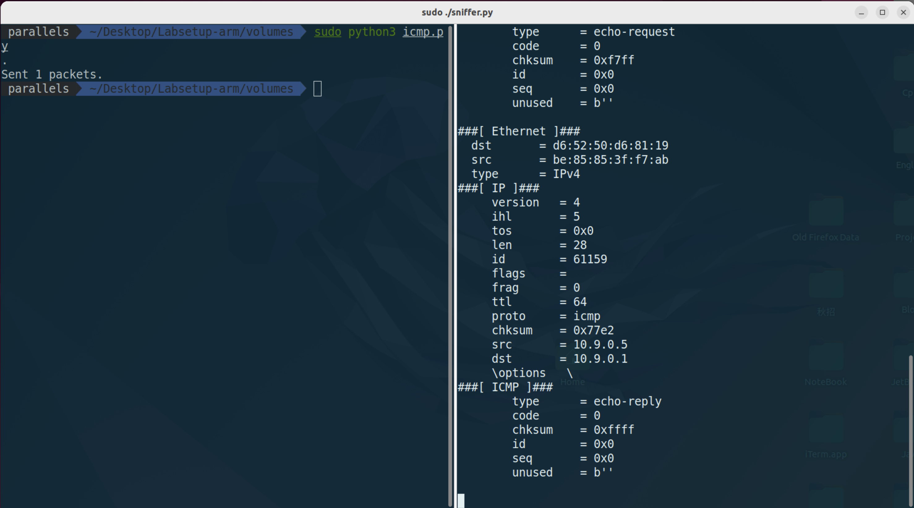
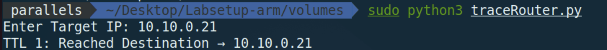
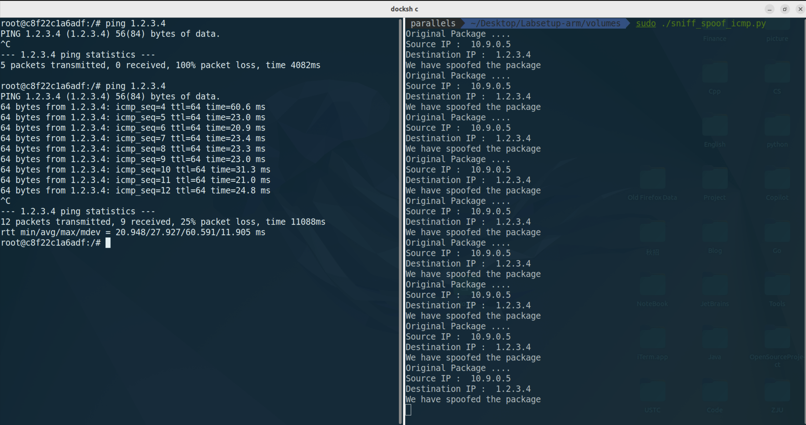
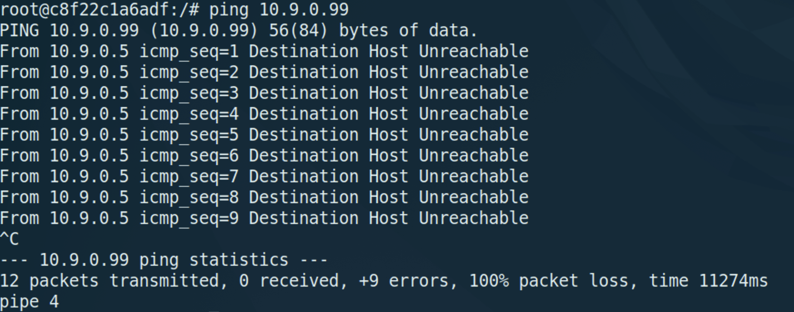
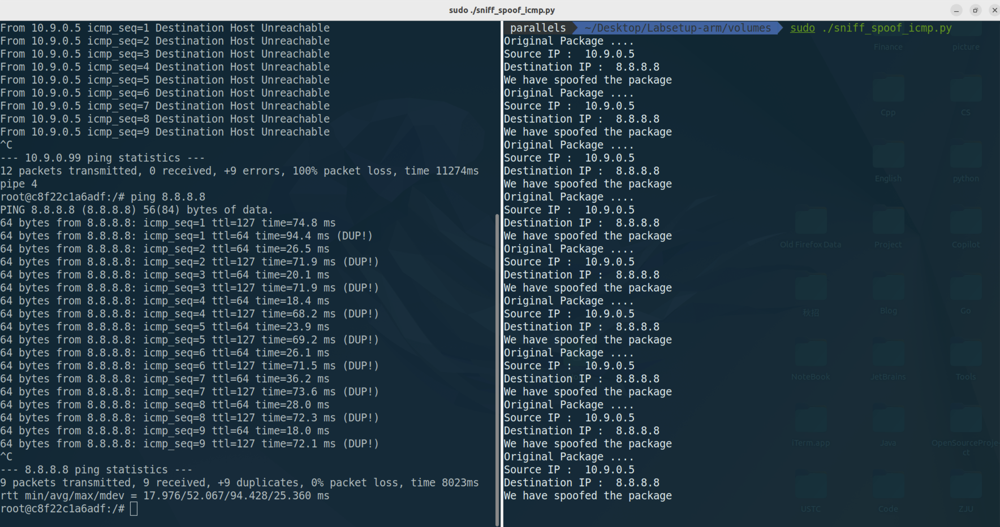

Network Lab1
Task1 使用 Scapy 嗅探和伪造数据包
Task1.1 嗅探包
1.1 A 观察现象

首先，我们使用ifconfig 命令来查看当前的网络接口名称。ID 为 br-987f0e60d6f5
接下来我们在 ./volumes目录下进行任务.
1 2 3 4 5 6 7 | |
我们首先发现，当不使用 chmod a+x ./sniffer.py 的时候，出现的情况是无法进行执行的，出现了operation not permitted 的错误。

接着，我们使用了chmod a+x ./sniffer.py 来进行权限的修改，然后再次执行，发现可以正常的进行嗅探。
如下图:

攻击者正常的嗅探到了对应的数据包。1.1B 几个子任务
只捕获 ICMP 包
1 | |
捕获来自某个特定的 IP 地址并且目标端口号为 23 的TCP 包
我们将
filter改成TCP
1 2 3 4 5 6 7 | |
并且在 10.9.0,5 的容器中利用 telnet 来进行测试，如下图结果。

捕获来自或去往某个特定网络的包。可以选择任意网络，例如 128.230.0.0/16，但不应选择与你的虚拟机连接的同一子网。
我们选择捕获 src net 128.230.0.0/16 和 dst net 128.230.0.0/16 的包。因此更改了以下代码:
1 2 3 4 5 6 7 8 | |
10.0.9.5 中进行ping查看嗅探结果.

Task1.2 伪造ICMP包
首先，我们继续进行监听。监听的类型为 icmp.其次，我们在攻击端进行伪造数据包的发送，伪造一个 echo request 来进行测试。下面是测试代码:
1 2 3 4 5 6 7 | |
接下来在 attack 端进行监听是否存在对应的数据包echo response。如下图:

我们可以明显的观察到，存在两种 echo request 和 echo response 的数据包。说明我们成功的伪造了数据包。
Task 1.3 Traceroute
使用 Scapy 来估计从虚拟机到目标距离，之间隔了多少个路由器。

下面是我的测试程序，主要的逻辑就是 维护一个 ttl 变量来进行测试，只有当抵达目标的时候才会停止增长.
1 2 3 4 5 6 7 8 9 10 11 12 13 14 15 16 17 18 19 20 21 22 23 | |
Task1.4 窃听和伪造结合
ARP协议是 Address Resolution Protocol 地址解析协议的缩写。主要的作用就是在 以太网环境下，数据的传输所依赖的并不是 IP 地址，而是MAC 地址，那么将IP地址转化成 MAC 地址的过程就是 ARP 协议的作用。
主要的思路就是，假设 Host A 给 Host B 发送数据包，Host A 会维护一个 ARP 表，存放的是 对于IP地址和 MAC 地址之间的映射。类似一个缓存的作用，如果此时 Host A发送的IP地址在 ARP 表中存在，那么就可以直接的将 IP 地址转化为对应的MAC包了。但是如果不存在，那么就会以广播的形式发送，请求对应的MAC地址。里面包含了发送端的 IP 和MAC地址，目标的IP地址和全是0的MAC地址，此时该网段的所有主机都能收到请求。但是只有Host B会对请求处理，因为他们都会将 发送的ARP 请求中的 IP 和自己的 IP 进行比较，如果相同，那么就会将自己的 MAC 地址发送给 Host A。这样 Host A 就可以将对应的 IP 转化为 MAC 地址了。
类似一个可以建立连接的过程，同时HostB 也会存放 HostA 的IP地址以及MAC 地址。
那么接下来的实验其实就比较好理解了。因为我们正常情况下，发送的 echo request,只有在目标的 Host 接收到了，才会有 echo response.但是我们这个实验要完成的就是，我们在 Host A 中发送一个 echo request 给 Host B,但是我们在 Host B 中伪造一个 echo response 给 Host A。这样就可以实现窃听和伪造的结合了。大体的思路就是，在 Host A中对某个 存在与否的 IP 进行 ping操作，然后我们 attack 端的目的就是对 ICMP 的 echo request 进行监听，一旦监听到了，就进行伪造 echo response 的操作。然后让 Host A 误以为是 Host B 发送的。
下面是我们的代码：
1 2 3 4 5 6 7 8 9 10 11 12 13 14 15 16 17 18 19 20 21 22 23 24 25 26 27 | |
上面的代码其实思路也很简单，就是 两个逻辑 嗅探 && 伪造.
下面是我们的测试结果:
ping 1.2.3.4

右图就是为了方便我们测试 attack 端是否嗅探到并且成功的伪造了数据包。发现已经成功，左边的图就是我们的 ping 的结果。一开始是没有回应的，但是在外面进行了嗅探之后，就接收到了回应。上面显示的25% package loss 是因为，为了进行对比，我故意先进行 ping 操作，然后再开启嗅探。
ping 10.9.0.99
10.9.0.99 是一个子网内不存在的主机IP,会直接返回 Destination Host Unreachable 的错误。正常是无法进行ping操作的。为什么二者出现这样的区别，其实很好理解的就是，前者是一个互联网的IP地址，而后者是一个局域网的IP地址。前者的网关会优先默许(response会早于错误信息的到来)，而后者会因为 ARP 机制，无法找到对应局域网内的Host,也就是说无法进行ARP解析,网关会直接返回错误。
ping 8.8.8.8
因为8.8.8.8 是真实存在的IP地址，所以会有正常的回应。所以我们看左边，接受到了两种类型的数据包。一种是我们的真实的echo response,另一种是我们进行伪造发送的echo response.这就是我们的实验的目的。
左边刚好 9*2 = 18 次，右边也伪造了 9 次。
说明: 我用了Deepseek来进行了scapy包中一些参数的详细解释，并且也熟悉了 ping 命令和 telnet命令的时候，同时平时没有用过docker-compose.yml 文件来建立多个容器，所以也学习了一下。